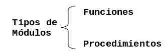

Subprogramas
En este capítulo aprenderás a usar los dos tipos de módulos mas comunes:
- las funciones y los
- procedimientos.
Definición y Manipulación
Un problema complejo se puede dividir en pequeños subproblemas más sencillos. Estos subproblemas se conocen como módulos y a su implementación en un lenguaje de programación se le llama subprograma.
Un subprograma puedes inluir cualquier estructura de control del mismo modo que haces en un programa.
El programa llama o invoca al subprograma, este ejecuta una tarea específica y devuelve el "control" al programa que lo llamó.
Cuando un programa no devuelve un resultado se le llama procedimiento, cuando devuelve un valor se le llama función.

Funciones
Una función es una operación que toma uno o más valores (argumentos) y devuelve un resultado (valor de la función para los argumentos dados). Por ejemplo:
f(x) = x / (1+ x2)
Donde: f es el nombre de la función, x es el argumento (también conocido
como parámetro formal)
La definición de una función se presenta de la siguiente manera:
tipoValor nombreFuncion (p1, p2, ..., pn)
Inicio
Bloque de instrucciones
Retorna valor
FinDonde: tipoValor indica el tipo de valor que devolverá la función.
nombreFuncion es el identificador con el cual se reconoce a la función en el
cuerpo del programa principal. p1, p2, … , pn es el grupo de parámetros que
define a la función. Y valor es el valor que devuelve la función.
Cuando definimos una función solo le indicamos al algoritmo que esta función existe, pero una definición de función no implica la ejecución de las instrucciones que la constituyen. Para hacer uso de una función, el algoritmo principal la debe llamar. Por ejemplo:
real valorAbsoluto(real numero)
Inicio
Si numero < 0 entonces
Inicio Si
Retorna numero * -1;
Fin Si
Retorna numero
Fin
Inicio
Imprimir "Ingresa un numero"
Leer numero
absoluto = valorAbsoluto(numero)
Imprimir "El valor absoluto de ", numero, " es:", absoluto
FinEn el caso de los procedimientos, que por definición, no devuelven un valor, el
valor que se usa para tipoValor es vacio. Por ejemplo, la funcion
mostrarValorAbsoluto en el siguiente programa.
vacio mostrarValorAbsoluto(real numero, real absoluto)
Inicio
Imprimir "El valor absoluto de ", numero, " es:", absoluto
Fin
Inicio
Imprimir "Ingresa un numero"
Leer numero
absoluto = valorAbsoluto(numero)
mostrarValorAbsoluto(numero, absoluto)
FinProblemas Propuestos
-
Diseñe un algoritmo que llene una matriz de
10 x 10y determine:- El número mayor almacenado en la matriz
- El número mayor almacenado en cada renglón
- La columna que tuvo la máxima suma
- El renglón que tuvo la máxima suma
Diseña una función para cada inciso.
- Diseñe un algoritmo que lea un numero y mediante una función regrese el valor de 1 si el numero es positivo y -1 si es negativo.